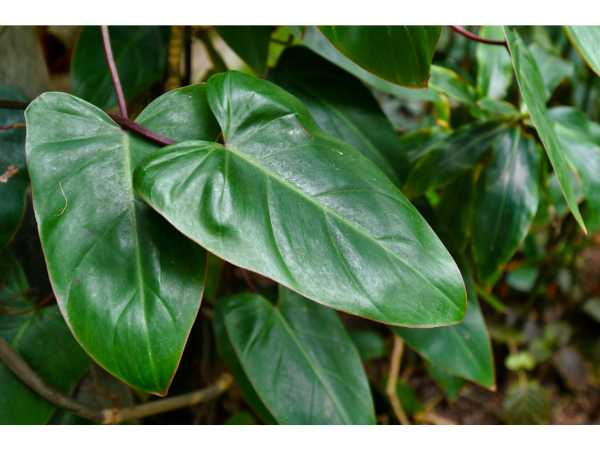

Philodendron erubescens
Common Names: Blushing Philodendron, Red-leaf Philodendron, Pink Princess Philodendron
Local Name: Philodendron (Tamil/Hindi)
Family: Araceae
Origin: Colombia and Panama
Plant Type: Evergreen climbing tropical plant
Average Lifespan: Many years with proper care; essentially indefinite
| Growth Habit | Climbing vine with aerial roots; can be grown as a trailing or climbing plant |
| Plant Size | 1–3 meters indoors; up to 6 meters in tropical outdoor conditions |
| Leaves | Large, arrow-shaped, glossy; new leaves emerge reddish-pink, maturing to dark green with reddish undersides |
| Flowers | Spathe and spadix inflorescence; rarely flowers indoors |
| Root System | Aerial roots for climbing; fibrous soil roots for nutrition and anchoring |
| Climate | Tropical; thrives in warm, humid conditions indoors or outdoors |
| Temperature Range | 18–30°C; sensitive to temperatures below 13°C |
| Soil Type | Well-draining, airy potting mix; peat or coco coir with perlite |
| Soil pH Preference | 5.5–7.0 |
| Sun Requirement | Bright indirect light; avoid direct harsh sunlight which scorches leaves |
| Irrigation Method | Water when top 2–3 cm of soil is dry; reduce in winter |
| Water Requirement | Moderate; allow partial drying between waterings |
| Can it Grow in Pots? | Yes, ideal container plant; repot every 1–2 years |
| Fertilizer Schedule | Monthly during growing season (spring–summer); reduce in winter |
| Recommended Organic Fertilizers | Diluted liquid compost, worm castings, fish emulsion |
| Common Pests | Spider mites, mealybugs, scale insects, fungus gnats |
| Common Diseases | Root rot (overwatering), leaf spot, bacterial blight |
| Disease Prevention & Remedies | Well-draining soil, avoid overwatering, wipe leaves to remove dust and pests |
| Pruning Time | Spring; remove leggy or damaged stems |
| How to Prune | Cut stems just above a node; use clean, sharp scissors |
| Propagation by Cuttings | Stem cuttings with 1–2 nodes root easily in water or moist potting mix in 2–4 weeks |
| Propagation by Seeds | Rarely used; seeds not commonly available |
| Water Usage | Low to moderate; efficient indoor plant |
| Biodiversity Benefits | Air-purifying qualities; removes VOCs from indoor environments |
| Commercial Production Regions | Widely cultivated in tropical nurseries; popular globally as houseplant |
| Market Uses | Indoor ornamental, office plant, landscape accent in tropical gardens |
| Market Value (Approx.) | ₹200–1,500 per plant depending on size and variety |
| Symbolism | Symbol of lush tropical beauty; popular in feng shui for positive energy |
| Traditional Uses | Widely used as indoor air purifier; caution — all parts are toxic if ingested |
Add your field observations here.